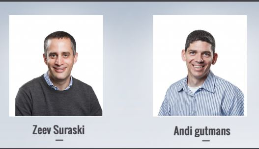

A Brief History Of PHP
 PHP was the brainchild of Rasmus Ledorf, a Danish-Canadian, in 1995. He actually began designing PHP in 1994, using C to write several CGI (Common Gateway Interface)
programs to maintain his personal website. He contined to hone these CGI programs so they would work with common web forms and databases. He called his first implemention PHP/FI, or "Personal Home Page/Forms Interpreter". He posted his new
interpreter on a discussion board in 1995, and called it "PHP Tools". Rasmus has stated he never intended for PHP to be an actual programming language. "I don't know how to stop it, there was never any intent to write a programming language...I have
absolutely no idea how to write a programming language, I just kept adding the next logical step on the way."
PHP was the brainchild of Rasmus Ledorf, a Danish-Canadian, in 1995. He actually began designing PHP in 1994, using C to write several CGI (Common Gateway Interface)
programs to maintain his personal website. He contined to hone these CGI programs so they would work with common web forms and databases. He called his first implemention PHP/FI, or "Personal Home Page/Forms Interpreter". He posted his new
interpreter on a discussion board in 1995, and called it "PHP Tools". Rasmus has stated he never intended for PHP to be an actual programming language. "I don't know how to stop it, there was never any intent to write a programming language...I have
absolutely no idea how to write a programming language, I just kept adding the next logical step on the way."
Once released, a small dev team began to develop alongside Rasmus. With continued work, the team released PHP/F1 in November 1997. Though not his original plan, Rasmus begain to finetune PHP into an actual programming language. He added
support for mSQL (Mini SQL), datbase support, cookies and more.
 While PHP/FI 2 was released in 1997, the parser was actually being totally rewritten already by Zeev Suraski and Andi Gutmans. They approached Rasmus and discussed
what they were trying to accomplish and that they believe this could be a groundbreaking programming language. They all teamed up and began working on completing the new parser. Early in 1998, PHP 3 was released. The "FI" portion of the name
was dropped and they gave it a resursive acronym for a name: PHP: Hypertext Preprocessor.
PHP 3 quickly gained traction around the world in developer circle. The third generation of the language implemented such things as object-oriented language support, consistent syntax, and modularity. Developers around the world began to submit
modules to the team for inclusion. It should be noted, PHP 3 was incredibly popular without actually having an official release. When it was offcially branded and released, there were already 70,000 domains around the world with it installed. At the
peak of its popularity, 10% of the worlds web servers has it installed.
Zeev and Andi went on to found Zend Technologies, their software company that bears the same name as the Zend Engine they created to interpret PHP.